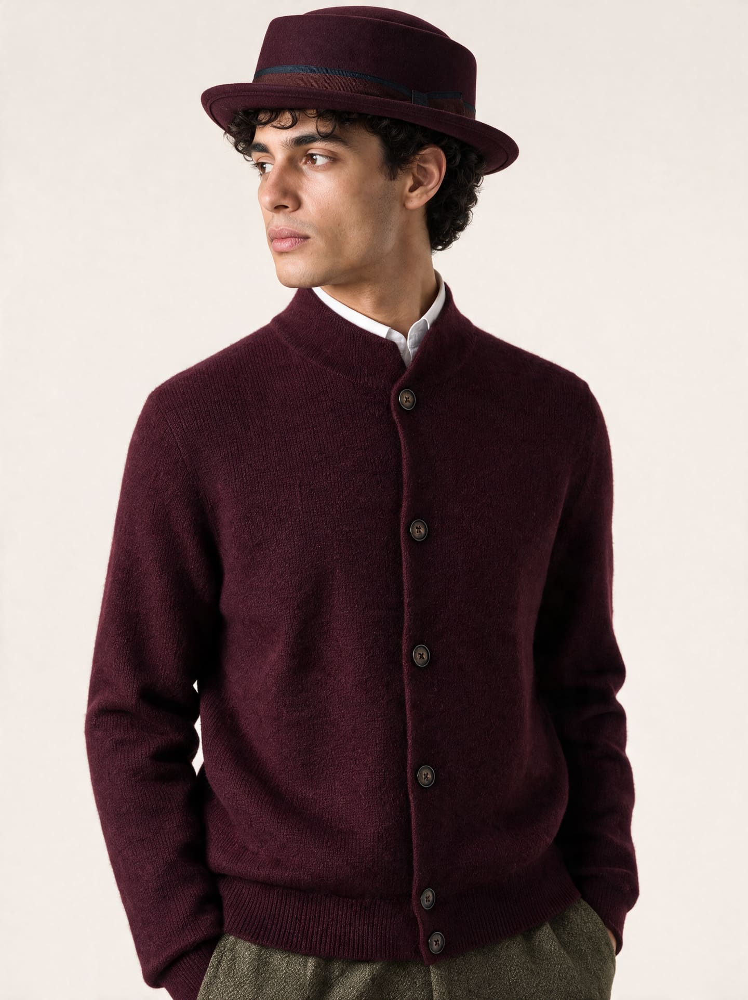
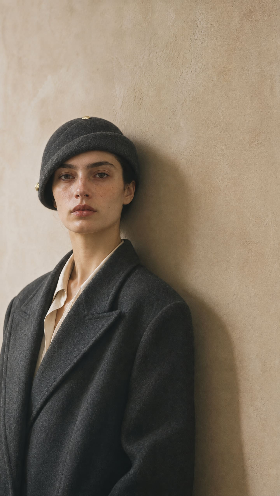
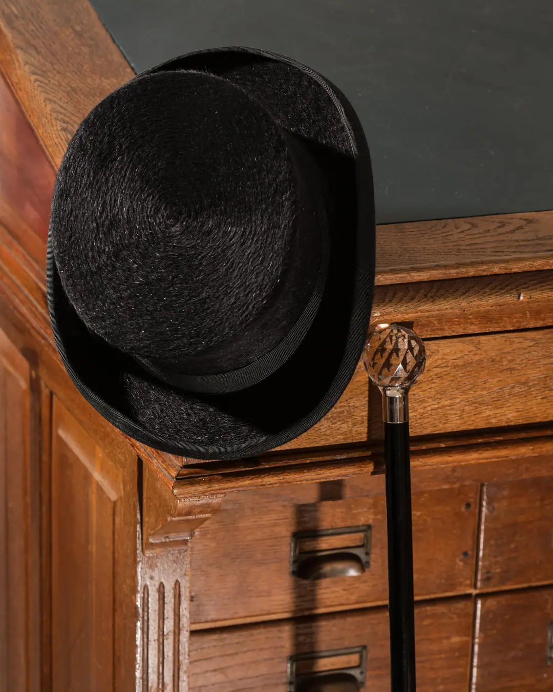
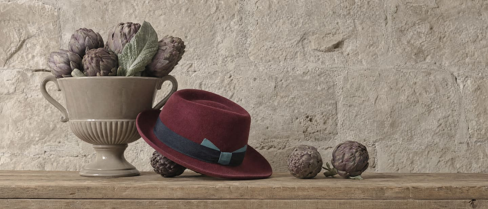

AHORA EN MÁS DE 500 PUNTOS DE VENTA

COLECCIÓN OTOÑO-INVIERNO · FW27

MAESTROS SOMBREREROS MARONE


Marone World
Newsletter
MARONE WORLD
Introduce tu dirección de correo electrónico para suscribirte a la Newsletter